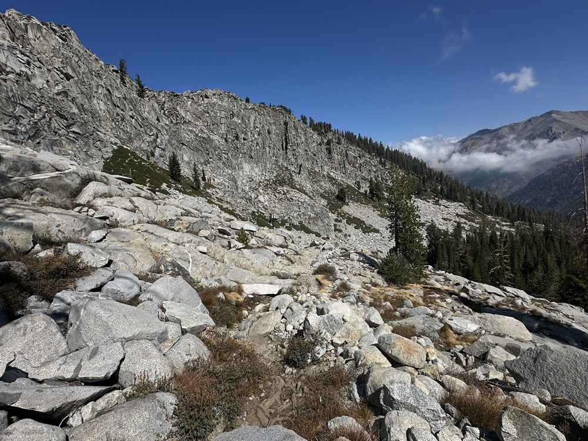
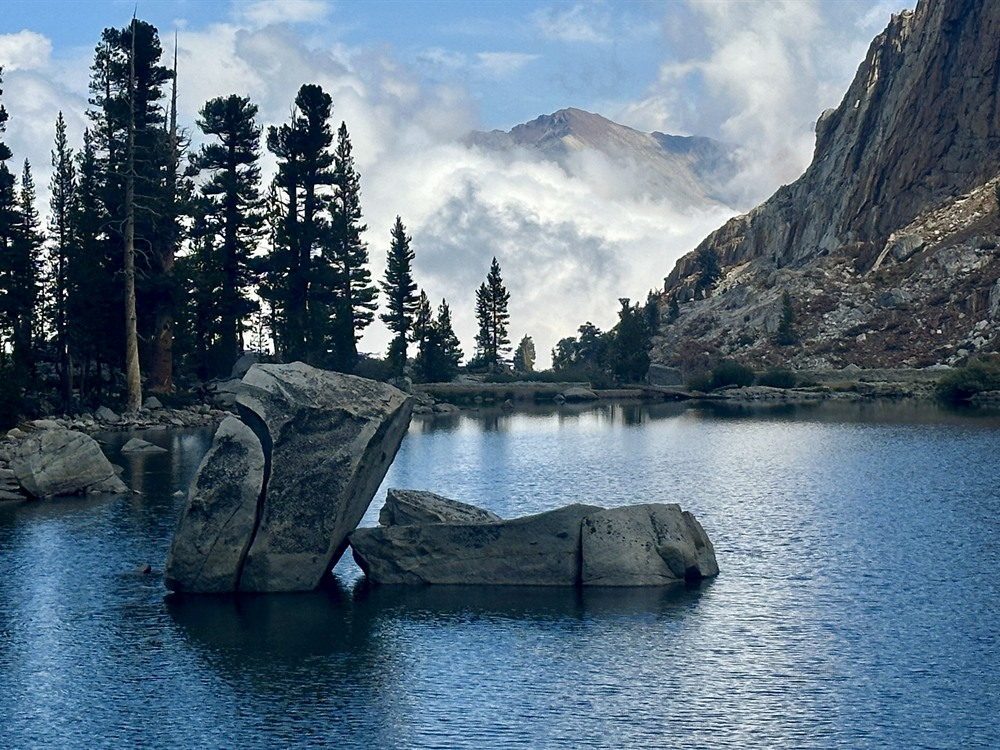
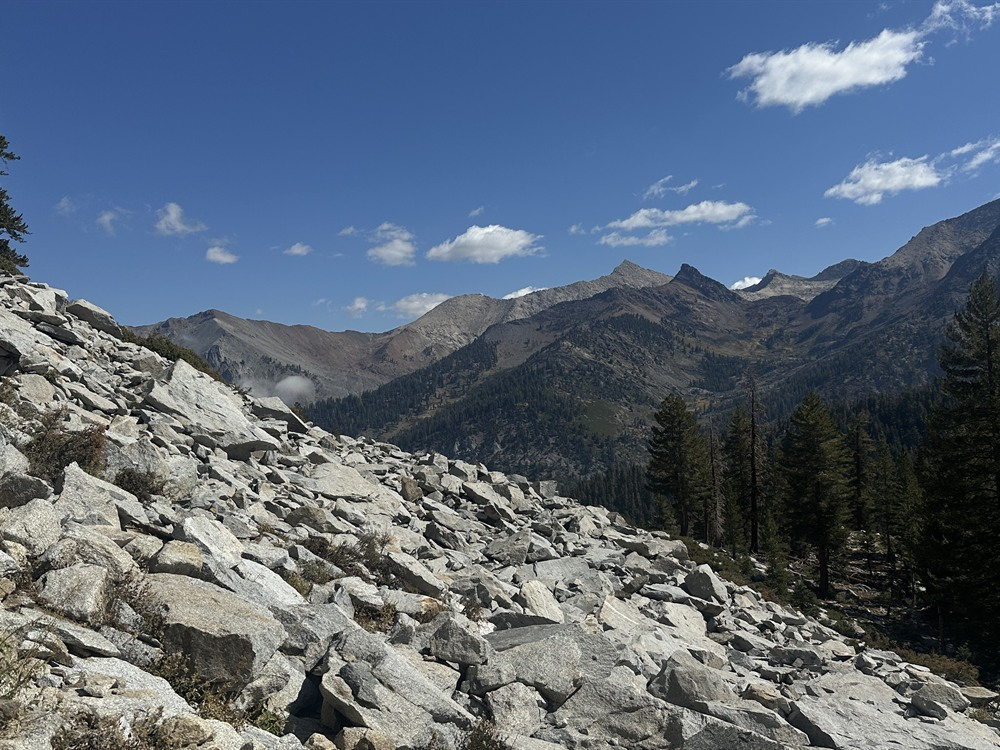
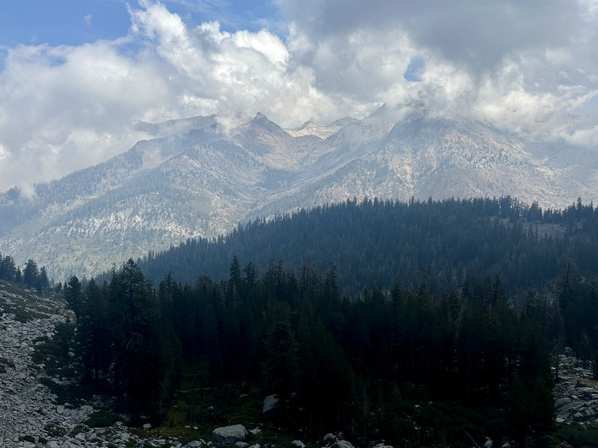
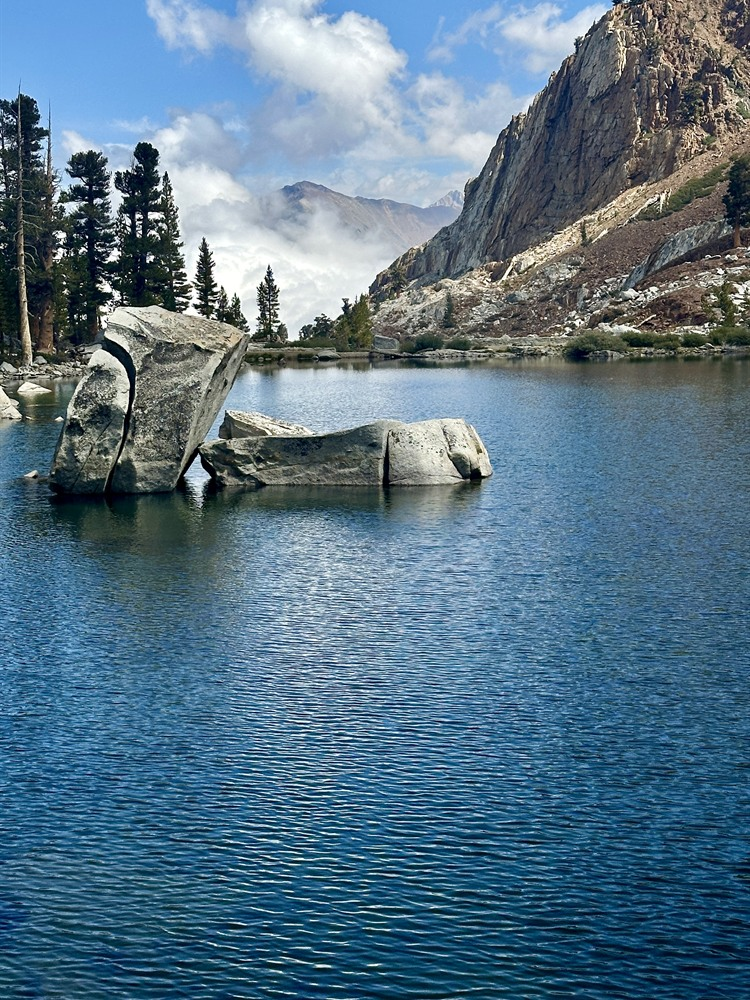
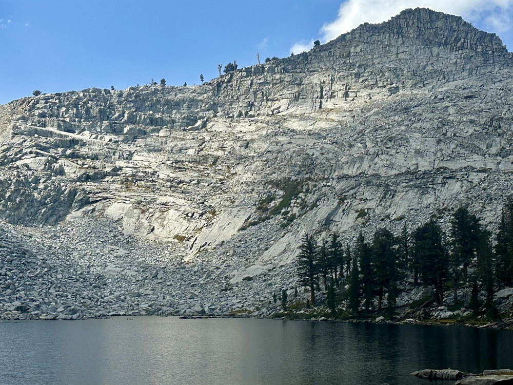

Alpine lake near Mineral King in Sequoia National Park, that can be reached by a three-and-a-half mile hike from Mineral King Valley
General Information
Length:
3.2 miles loop
Elevation Gain:
495 feet
Pet Policy:
Pets NOT allowed on trails
Seasons:
Spring, summer, fall
Trailhead:
Spur off Wolverton Road
Location:
Website:
How to Get There
Overview
Eagle Lake is a glacial alpine lake at 10,000 feet in Sequoia National Park’s Mineral King area, reached by a 3.4-mile one-way hike from the White Chief trailhead at the end of Mineral King Road. The trail climbs up the west side of the valley to Eagle Basin, and a fork continues to Mosquito Lakes.
This article uses material from the Wikipedia articles "Eagle Lake (Tulare County)", which are released under the Creative Commons Attribution-Share-Alike License 3.0





